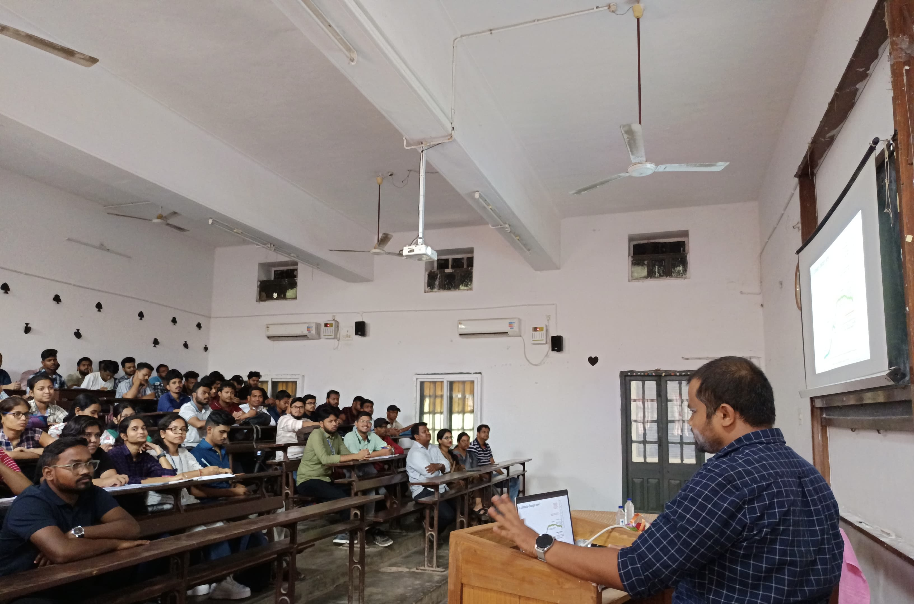

Invited Talks /Lectures 📖
🌊 Ravenshaw University, Jan 2025

FM Autonomous college

- Invited talk on “Deglacial evolution in ventilation of the western
equatorial Atlantic Ocean and its link to atmospheric CO2 changes” at
the Indian Institute of Technology Bhubaneswar on 4th March 2024.
- Invited keynote presentation on “Coupling between deep ocean
circulation and terrestrial climate change: lessons from the past” at
the Fakir Mohan University, Balasore on 9th January 2025.
- Invited extramural lecture on “Decoding Earth’s Climate History:
Techniques and Insights” at Fakir Mohan Autonomous College, Balasore on
13th January 2025.
- Invited extramural lecture on “Unravelling past climate change
through Himalayan Landforms” at Ravenshaw University, Cuttack on 16th
April 2025.
- Invited extramural lecture on “Glaciers and climate change” at
Adikabi Saraladas Degree College, Tirtol on 17th April 2025.
Presentations at Conferences 🧑💼
🌊 FM University, Jan 2025

🛰️NIO, Nov 2024

- Topic: Deglacial evolution in ventilation of the western equatorial
Atlantic Ocean and its link to atmospheric CO2 changes.
- TROPQUA-2024
- Mode: Presentation (Offline/ In-person) on 3rd Nov 2024
- Topic: The Atlantic meridional overturning circulation during
Heinrich Stadial 1
- AGU fall meeting-2023
- Mode: Presentation (Offline/In-person) on 14 Dec 2023
- Topic: Past geomagnetic field intensity reconstructed using
authigenic 10Be/9Be
- Frontiers in Geoscience Research Conference (FGRC-23), PRL,
Ahmedabad
- Mode: Presentation (Offline/In-person) on 03 Feb 2023
- Topic: 10Be/9Be Ratio Variation in the Central Indian Ocean during
the Last 43 ka; Implication to Past Geomagnetic Field Intensity Changes
- AGU fall meeting-21
- Mode: Presentation (Online) on 17 Dec 2021
- Topic: Spatial variability and residence time of beryllium isotopes
in the Indian Ocean: Role of oceanic processes
- Frontiers in Geoscience Research Conference (FGRC-21), PRL,
Ahmedabad
- Mode: Presentation (Online) on 28 Sept 2021
- Topic: Role of In-situ and Meteoric 10Be in Quaternary Glaciation,
Marine Chronology, and Paleomagnetic Reconstruction
- 7th national conference of Ocean Society of India (OSICON-21),
NCPOR, Goa
- Mode: Presentation (Online) on 14 Aug 2021
- Topic: “Quaternary Glaciation Studies using terrestrial cosmogenic
radionuclides”
- Second National Conference and Field Workshop on “Recent Studies on
Geology of Kachchh Basin”, KSKV Kachchh University, Gujarat
- Mode: Poster (Offline/In-person) on 30 Dec 2018
Workshops 🧑🏫
- Workshop on Paleoclimate data assimilation (Online; 21-23 Aug 2023)
organised by Northern Arizona University.
- Webinar & Workshop on Proxy System Modeling for Lacustrine
Archives (Online; 13 Apr 2023)
- Workshop on Isotopes in Earth, Ocean & Atmospheric Sciences
organised by the National Institute of Oceanography, Goa
- Isocamp2021 organised by the Centre for Stable Isotopes, University
of New Mexico (Online)